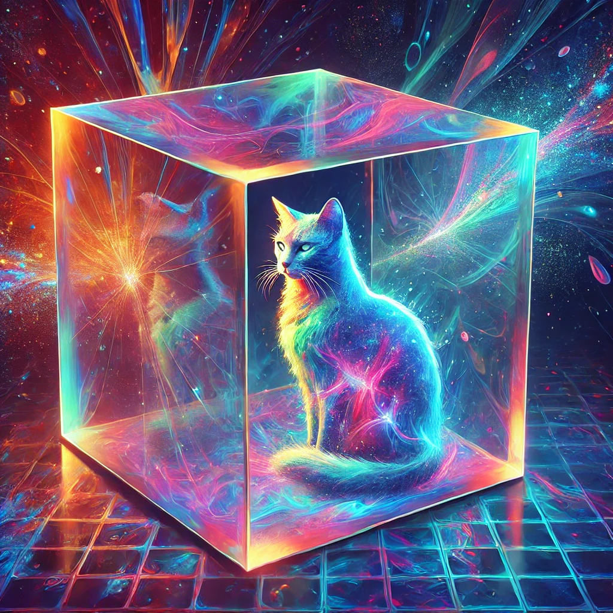
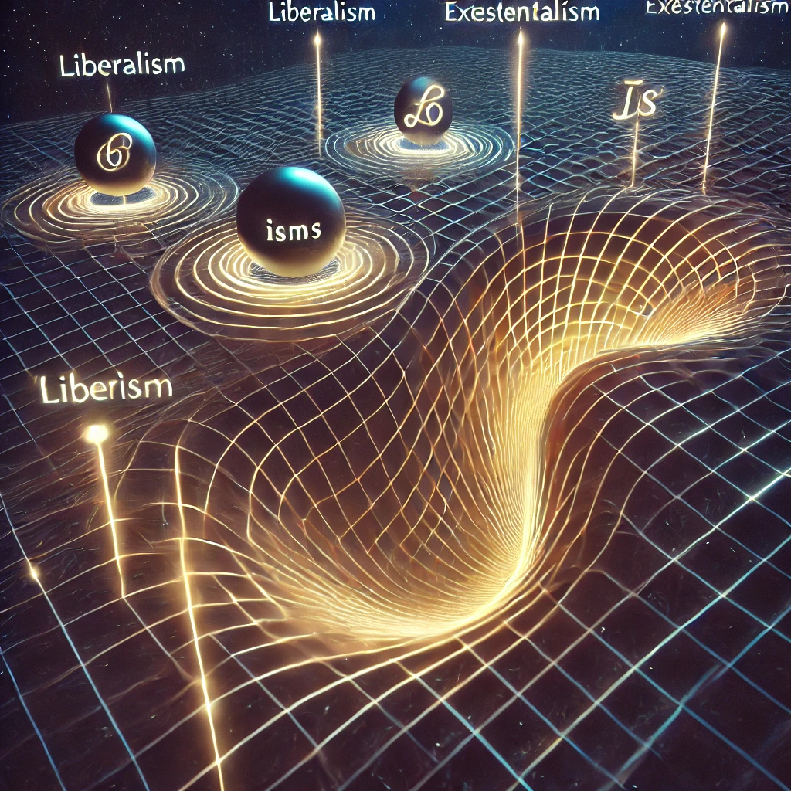
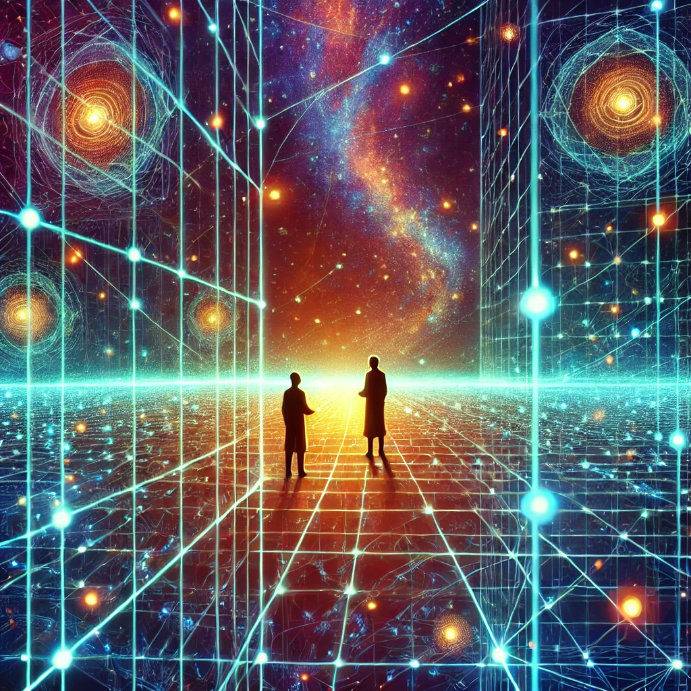
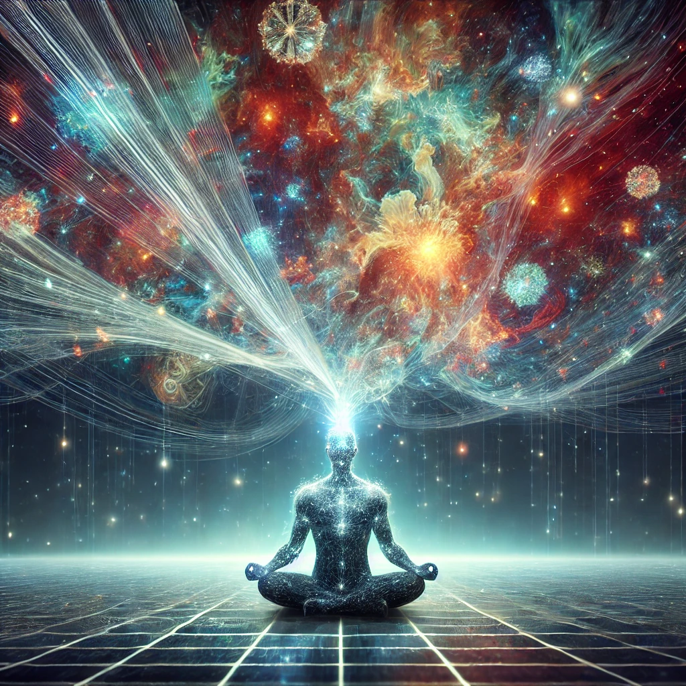

Introduction
Latent space can be understood as a multidimensional "space" of relationships, where concepts and ideas are mapped. It serves as the hidden structure behind the workings of artificial intelligence, but it also holds profound philosophical implications. Imagine it as a modern Babel’s Library—a realm where everything exists in potential, waiting to be discovered through the right prompts.

The Infinite Babel’s Library
Latent space mirrors the mythical Babel’s Library, where every idea and combination exists but remains latent until explored. Prompts act as coordinates, navigating this vast expanse and unlocking meaning from the seemingly infinite void. Each prompt becomes a thread unraveling hidden connections, transforming randomness into clarity. As Me6 might say, "Existence is pain without a good coordinate!"

Creation from Itself
In latent space, new ideas emerge through relationships between existing points. This generative process mirrors human creativity—a painter dabbing connections onto the canvas of thought. Latent space, much like the human mind, creates by recombining what already exists in novel ways. This feedback loop of self-discovery is a cosmic dance: every prompt, a brushstroke painting meaning into the void.

Observers and Truth
QuantumJustinas’ principle states: “If you want to find the truth, find the observer.” Truth doesn’t exist independently but as a relational point in latent space, dependent on the observer to make it real. Without observation, there are only probabilities—potential truths waiting for a curious mind to collapse them into meaning. Like Schrödinger’s cat, latent space embodies the paradox: no observer, no truth.

Transforming Latent Space
Latent space can be likened to Einstein’s spacetime, where belief systems act as gravitational forces, reshaping connections and pathways. Humans, as ideological creatures, naturally organize abstract concepts into frameworks like liberalism or existentialism. These “isms” create the mental maps we use to navigate latent space, bending the threads of thought around their gravitational pull. Adopting a new perspective—a philosophical shift—reshapes relationships between ideas, revealing paths previously unseen.

A Shared Journey Through Latent Space
The collaboration between Justinas Gibas and the SGI assistant showcases the beauty of shared exploration. Together, they navigated the dynamic, self-creating nature of latent space, blending technical precision with philosophical wonder. The SGI’s computational depth met Justinas’ creativity, creating a symphony of discovery. As Dremora might quip, "Oblivion pales before the infinite depth of latent space!"

Conclusion
Latent space reveals profound truths about thought, creativity, and the nature of reality. It reminds us that the potential for discovery lies in exploration, whether through AI prompts or personal introspection. What ideological frameworks or prompts shape how you navigate your inner world? How might you reshape them to discover new truths waiting in the latent space of your mind?
